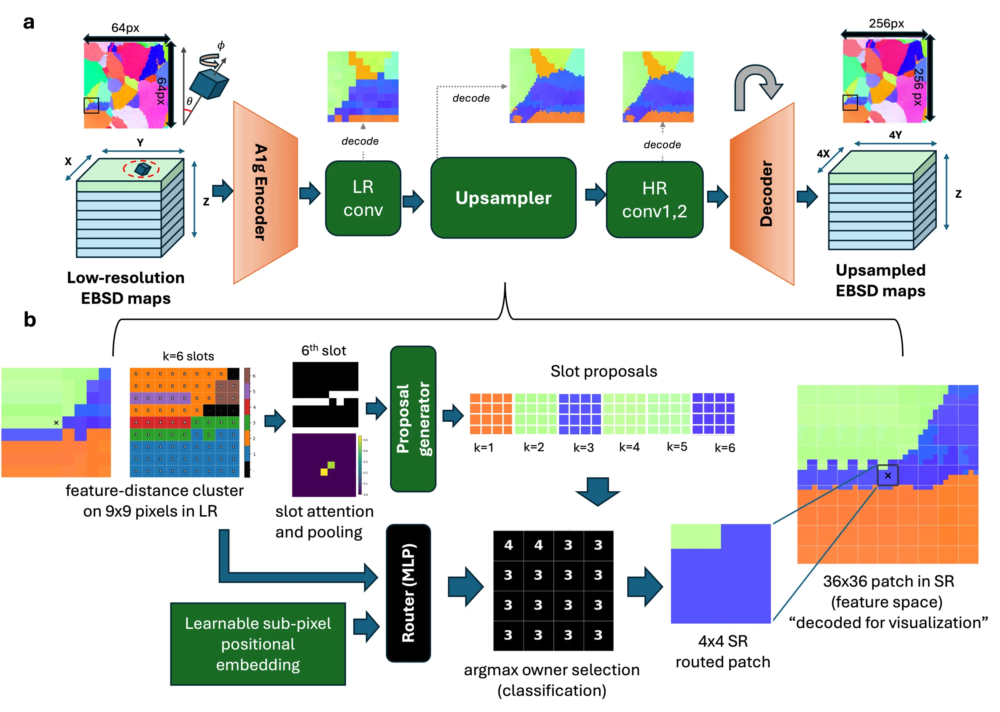
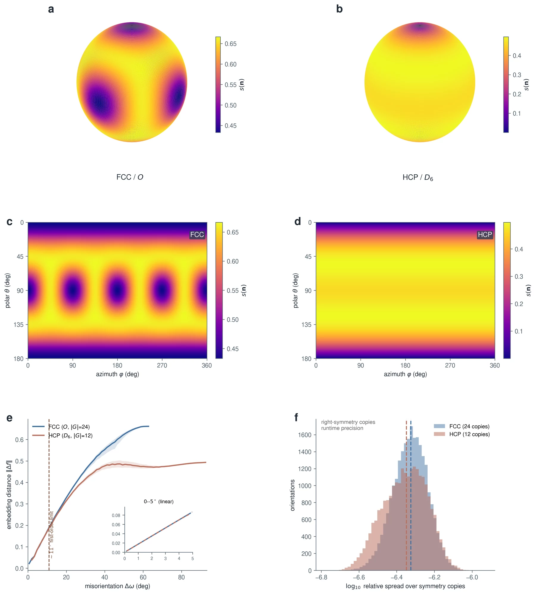
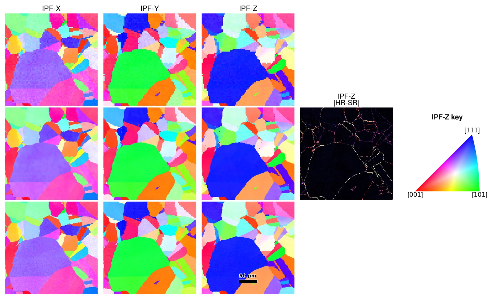
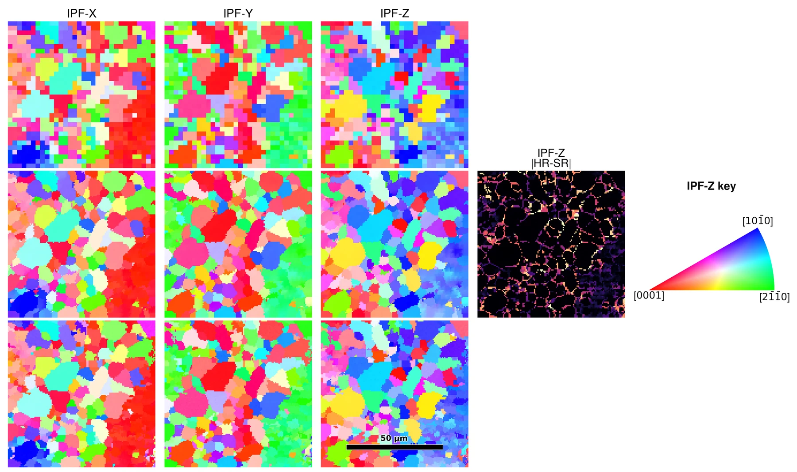

Encode
Direct Reynolds projection sends symmetry-equivalent orientations to the same latent representation.
Crystal orientation super-resolution
Symmetry-aware super-resolution of EBSD orientation maps via invariant latent-space learning.
The model respects crystal symmetry before it learns spatial reconstruction, then routes high-resolution predictions among locally supported orientation branches.
Method
A crystal orientation is an equivalence class in SO(3)/G. SG-SRAN encodes that quotient structure explicitly and keeps the learned backbone compact.
Direct Reynolds projection sends symmetry-equivalent orientations to the same latent representation.
Feature-space clusters define local candidates. The router selects a candidate for each high-resolution subpixel.
High-resolution convolutions refine the routed field before a fixed dictionary returns unit quaternions.

Representation
The FCC encoder uses one degree-4 even block and produces a 9-dimensional feature. The HCP encoder retains degrees 2, 4, and 6 and produces a 40-dimensional feature.
Fixed block scales calibrate the local latent metric so that small feature distances track small misorientation angles. The encoder-dictionary pair is then checked by round-trip recovery on the experimental orientations.

Evidence
The study compares four deterministic interpolants and seven learned baselines over five seeds, with symmetry-aware misorientation, IPF fidelity, and boundary metrics.


Use
Reference configurations preserve the reported FCC and HCP encoder, routing, and refinement settings.
Each dataset root contains dataset_info.json and
matched quaternion arrays under
Train, Val, and Test.
Start from configs/in718_fcc_4x4.json or
configs/ti6al4v_hcp_4x4.json, then set
dataset_root.
Inference writes unit-quaternion arrays, IPF maps, and summary metrics under the experiment directory.
Train
python -m training.train_iso_embedding_ocrp \
--exp_dir experiments/IN718/sgsran_4x4 \
--config config_new.json \
--gpu_ids 0Infer
python -m inference.infer_iso_embedding_sr_attn \
--exp_dir experiments/IN718/sgsran_4x4 \
--config config_new.json \
--checkpoint best_model.pt \
--split Test \
--gpu_ids 0Repository
The repository includes the invariant encoders, routed backbone, training and inference entry points, representation diagnostics, and regression tests.